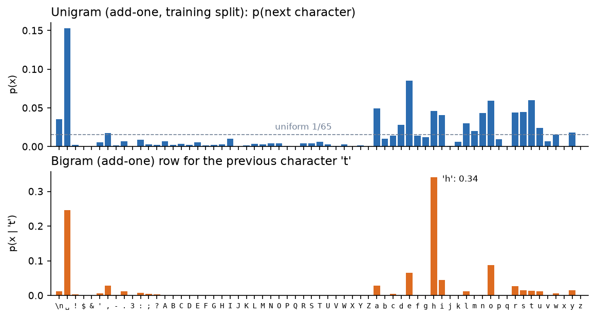
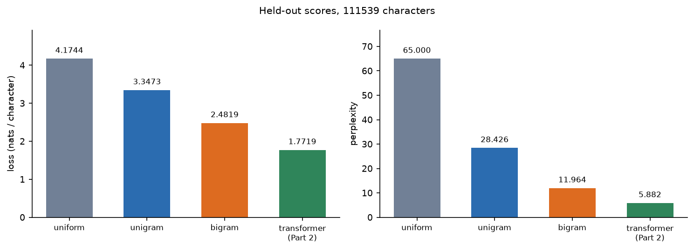
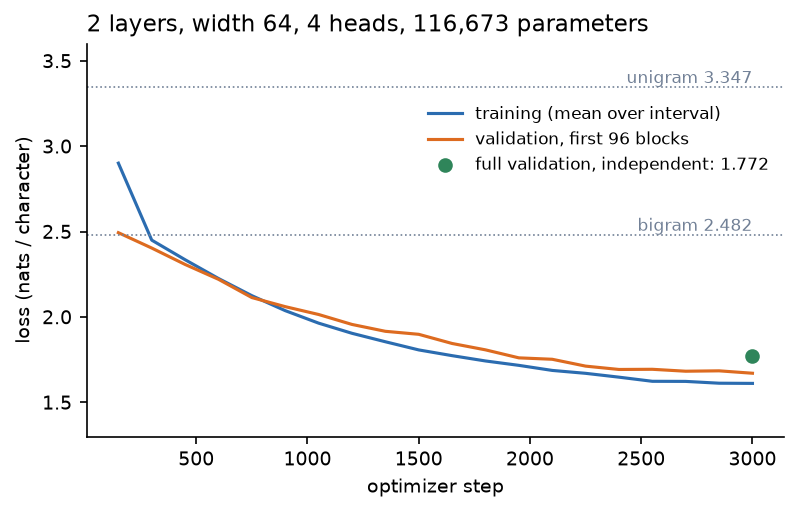
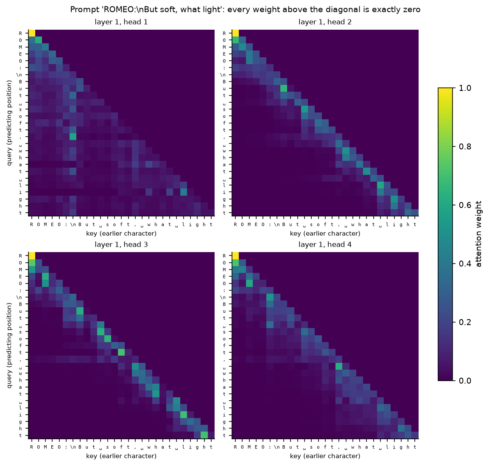
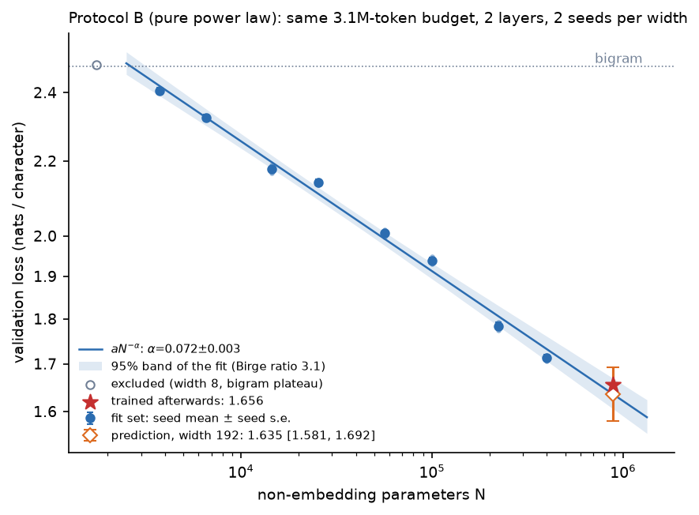
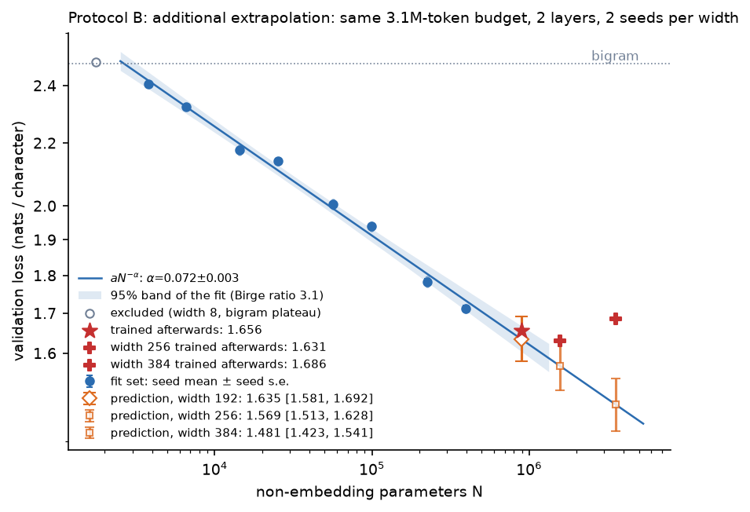
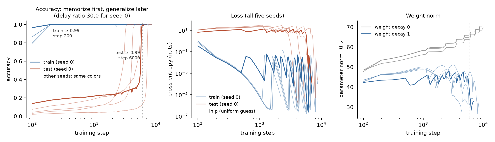
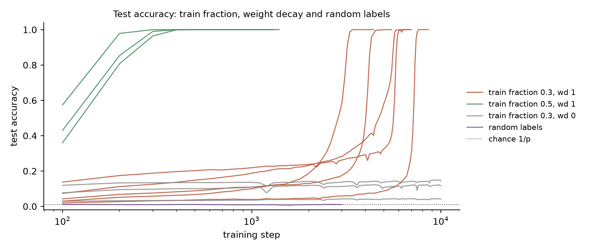
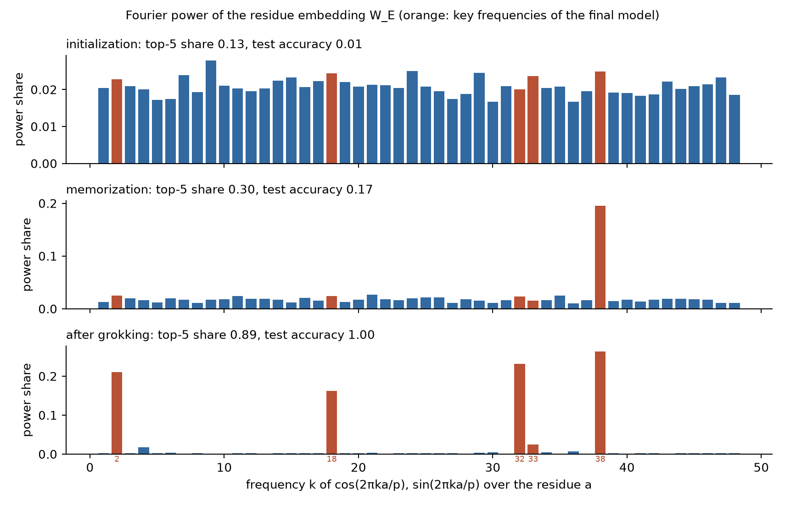
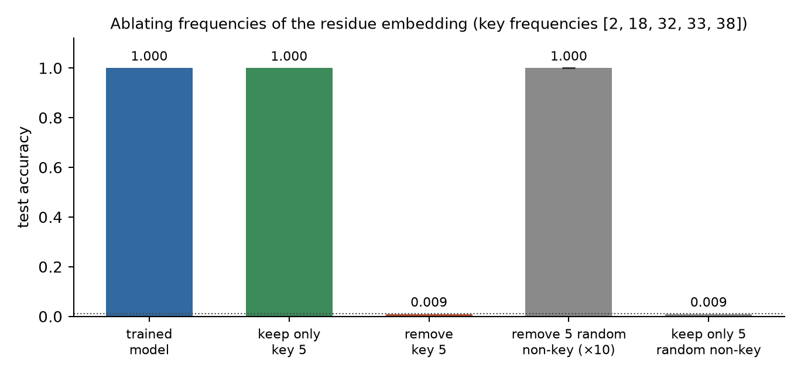

Week 8 · 课程要求与计算证据
字符预测、尺度规律与顿悟
Week 8 的四个核心部分已按课程要求运行。下图使用本次本机训练和验证数据；教师资源包中的参考结果不作为本次输出。
自动核验：59/59 项通过；图中的区间失准如实保留。课程要求下周课堂展示。
4.174 → 2.482利用字符频率与前一字符，验证损失下降1.772Transformer 的完整验证损失；课程目标 < 1.851.656宽度 192 的两种子均值；落入事前预测区间0.009删除五个关键频率后的测试准确率
1 · 下一字符的概率
自回归模型把序列概率拆成条件概率的乘积。交叉熵是实际字符的平均负对数概率；困惑度为其指数。三种基线只用训练集拟合，验证集最后按字符数加权。

字符频率和 t 之后的条件概率

四个预测器的验证损失与困惑度
2 · 因果 Transformer
改变后半窗口的字符，前半窗口的 logits 最大变化为 0；第一层四个注意力头均不读取未来。验证分数由独立 NumPy 前向重新计算。

训练与验证损失：曲线从原日志恢复，保留四位小数

第一层四个注意力头；对角线以上为零
温度 0.5：500 个新字符
ROMEO:
I'll have the day as mine a the his law.
AUFIDIUS:
In the have heart to do may chance,
To so the the die a sound have for the hear,
The hold beseeing anst and made to the theem
And the treas and brother and than: when and
For most the so the behter thy for the time
The news are anst and and obele hols,
To seellies be the the steer thing
The thesent the dound ther shall off,
Who his with here in the pating of and the hereas.
And wheresst and of Richard and off his tound
The with behold do his fa
温度 1.0：500 个新字符
ROMEO:
I'll how with then.
Bincens, I ha, he condere smost.
LORD CACESTIO:
Romeo! love and thy so live, And gentle and,
From heresfulring the ever, to mises:
For wifear thou drating head upon teming,
And bute as dotal: what and, there's I the his herhould
MyselLs: exair the hip sharbleds
Wellcome.
ISABELLLAUS:
I not I'll experefue tell this friencelss
Move anst the greaves my his anch'd greeas
their the patiion? so take in folk of-did:
Comertuousom Reing eyes, and he cermest. I will.
SA$Led ry, om
3 · 先预测，再训练
八个宽度拟合纯幂律，宽度 8 排除。宽度 192 的预测为 1.6352 [1.5808, 1.6922]，随后训练的平均损失为 1.6556。

固定预算下的拟合、95% 区间与 192 宽度事前预测
学习单已经公开教师参考结果，所以时间戳只能证明本次预测先于本次训练，并不构成完全不知参考结果的盲法。
可选扩展：外推失准
256 和 384 的预测在两组训练之前冻结。它们的实测均未落入区间；384 甚至比 256 更差。固定训练预算可能影响比较，但本次不足以确定唯一原因。
| 宽度 | 事前预测 [95% 区间] | 实测 | 命中 |
|---|
| 256 | 1.5692 [1.5132, 1.6278] | 1.6307 | 否 |
| 384 | 1.4807 [1.4227, 1.5410] | 1.6856 | 否 |

扩展到宽度 256 和 384 的事前预测与实测
4 · 模加法中的顿悟
训练对很快被记住，未见过的输入对却在许多步之后才被正确预测。参数范数、无衰减、更多训练对和随机标签共同说明训练与泛化可以不同步。
| 种子 | 记忆步数 | 顿悟步数 | 延迟比 |
|---|
| 0 | 200 | 6000 | 30.0 |
| 1 | 200 | 5800 | 29.0 |
| 2 | 200 | 7600 | 38.0 |
| 3 | 200 | 4500 | 22.5 |
| 4 | 200 | 3400 | 17.0 |

五个主种子的准确率、损失和参数范数

权重衰减、训练比例和随机标签对照
seed 0 只保留五个关键频率时准确率 0.99954；删除它们后为 0.00926。独立 NumPy 实现复算了频谱和消融。

初始化、记忆和训练末态的残数嵌入傅里叶功率

保留或去除关键频率与随机非关键频率
机器可读核验记录 · 独立 NumPy 复算 · 全部复现命令